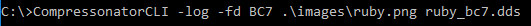
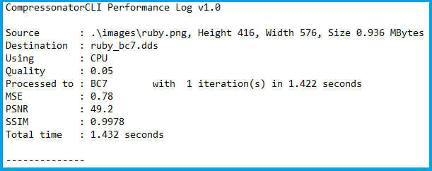
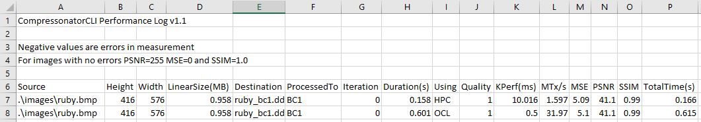
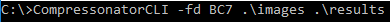
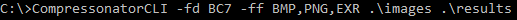
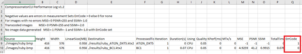

Command Line Options¶
Usage CompressonatorCLI.exe [options] SourceFile DestFile
| Mip Map Options: | |
|---|---|
| -GenGPUMipMap | When encoding with GPU this flag will enable mip map level generation using GPU HW |
| -mipsize <size> | The size in pixels used to determine how many mip levels to generate |
| -miplevels <Level> | Sets Mips Level for output, (mipSize overides this option): default is 1 |
| -nomipmap | Turns off Mipmap generation |
| -UseSRGBFrames | When encoding with GPU, GL_FRAMEBUFFER_SRGB will be enabled else use GL_FRAMEBUFFER |
| Compression Options | |
|---|---|
| -fd <format> | Specifies the destination texture format to use |
| -DecodeWith | GPU based decompression using OpenGL,DirectX or Vulkan Default is OpenGL, UseGPUDecompress is implied when this option is set |
| -decomp <filename> | If the destination file is compressed optionally decompress it to the specified file. Note the destination must be compatible with the sources format,decompress formats are typically set to ARGB_8888 or ARGB_32F |
| -doswizzle | Swizzle the source images Red and Blue channels |
| -EncodeWith | Compression with CPU, HPC, OCL, DXC, GPU. Default is CPU. GPU will use GL Compress Extensions OCL & DXC is only available on Windows Version |
| -UseGPUDecompress | By default decompression is done using CPU, when set OpenGL will be used by default, this can be changed to DirectX or Vulkan using DecodeWith setting |
| Channel Formats | |
|---|---|
| ARGB_8888 | ARGB format with 8-bit fixed channels |
| ARGB_16F | ARGB format with 16-bit floating-point channels |
| ARGB_32F | ARGB format with 32-bit floating-point channels |
| Compression Formats | |
|---|---|
| ASTC | Adaptive Scalable Texture Compression |
| ATC_RGB | Compressed RGB format |
| ATC_RGBA_Explicit | ARGB format with explicit alpha |
| ATC_RGBA_Interpolated | ARGB format with interpolated alpha |
| ATI1N | Single component compression format using the same technique as DXT5 alpha. Four bits per pixel |
| ATI2N | Two component compression format using the same technique as DXT5 alpha. Designed for compression object space normal maps. Eight bits per pixel |
| ATI2N_XY | Two component compression format using the same technique as DXT5 alpha. The same as ATI2N but with the channels swizzled.Eight bits per pixel |
| ATI2N_DXT5 | An ATI2N like format using DXT5. Intended for use on GPUs that do not natively support ATI2N. Eight bits per pixel |
| BC1 | Four component opaque (or 1-bit alpha) compressed texture format. Four bit per pixel |
| BC2 | Four component compressed texture format with explicit alpha. Eight bits per pixel |
| BC3 | Four component compressed texture format with interpolated alpha. Eight bits per pixel |
| BC4 | Single component (red channel)compressed texture format |
| BC4_S | Signed Channel compression using BC4 format |
| BC5 | Two component (reg and green channels) compressed format |
| BC5_S | Signed Channel compression using BC5 format |
| BC6H | High-Dynamic Range compression format |
| BC7 | High-quality compression of RGB and RGBA data |
| DXT1 | An opaque (or 1-bit alpha) DXTC compressed texture format. Four bits per pixel |
| DXT3 | DXTC compressed texture format with explicit alpha. Eight bits per pixel |
| DXT5 | DXTC compressed texture format with interpolated alpha. Eight bits per pixel |
| DXT5_xGBR | DXT5 with the red component swizzled into the alpha channel Eight bits per pixel |
| DXT5_RxBG | Swizzled DXT5 format with the green component swizzled into the alpha channel. Eight bits per pixel |
| DXT5_RBxG | Swizzled DXT5 format with the green component swizzled into the alpha channel & the blue component swizzled into the green channel. Eight bits per pixel |
| DXT5_xRBG | Swizzled DXT5 format with the green component swizzled into the alpha channel & the red component swizzled into the green channel. Eight bits per pixel |
| DXT5_RGxB | Swizzled DXT5 format with the blue component swizzled into the alpha channel. Eight bits per pixel |
| DXT5_xGxR | Two-component swizzled DXT5 format with the red component swizzled into the alpha channel & the green component in the green channel. Eight bits per pixel |
| ETC_RGB | Ericsson Texture Compression - Compressed RGB format. |
| ETC2_RGB | Ericsson Texture Compression 2 - RGB format |
| ETC2_RGBA | RGB with 8 bit alpha |
| ETC2_RGBA1 | RGB with 1 bit alpha |
| Codec Options | Reference developer SDK documentation for range of values |
|---|---|
| -AlphaRestrict <value> | This setting is a quality tuning setting for BC7 which may be necessary for some textures |
| -AlphaThreshold <value> | The alpha threshold to use when compressing to DXT1 & BC1 with DXT1UseAlpha Texels with an alpha value less than the threshold are treated as transparent value is in the range of 0 to 255, default is 128 |
| -Analysis <image1> <image2> | Generate analysis metric like SSIM, PSNR values between 2 images with same size. Analysis_Result.xml file will be generated. |
| -BlockRate <value> | ASTC 2D only - sets block size or bit rate value can be a bit per pixel rate from 0.0 to 9.9 or can be a combination of x and y axes with paired values of 4,5,6,8,10 or 12 from 4x4 to 12x12 |
| -ColourRestrict <value> | This setting is a quality tuning setting for BC7 which may be necessary for convenience in some applications |
| -CompressionSpeed <value> | The trade-off between compression speed & quality This setting is not used in BC6H and BC7 |
| -diff_image <image1> <image2> | Generate difference between 2 images with same size A .bmp file will be generated. Please use compressonator GUI to increase the contrast to view the diff pixels. |
| -DXT1UseAlpha <value> | Encode single-bit alpha data. Only valid when compressing to DXT1 & BC1 |
| -imageprops <image> | Print image properties of image files specifies. |
| -log | Logs process information to a process_results.txt file containing file info, performance data,SSIM,PSNR and MSE. |
| -logcsv | Logs process information to a process_results.csv file containing file info, performance data,SSIM,PSNR and MSE. |
| -log <filename> | Logs process information to a user defined text file |
| -logcsv <filename> | Logs process information to a user defined csv file |
| -ModeMask <value> | Mode to set BC7 to encode blocks using any of 8 different block modes in order to obtain the highest quality |
| -NumThreads <value> | Number of threads to initialize for ASTC,BC6H,BC7 encoding (Max up to 128). Default set to 0 (Auto) |
| -Performance <value> | Sets performance of encoding for BC7 |
| -Quality <value> | Sets quality of encoding for BC7 |
| -RefineSteps <value> | Adds extra steps in encoding for BC1 to improve quality over performance. Step values are 1 and 2. |
| -Signed <value> | Used for BC6H only, Default BC6H format disables use of a sign bit in the 16-bit floating point channels, with a value set to 1 BC6H format will use a sign bit |
| -UseChannelWeighting <value> | Use channel weightings |
| -WeightR <value> | The weighting of the Red or X Channel |
| -WeightG <value> | The weighting of the Green or Y Channel |
| -WeightB <value> | The weighting of the Blue or Z Channel |
| -ff <ext>,<ext>,…,<ext> | File filters used for processing a list of image files with specified extensions in a given directory folder supported <ext> are any of the following combinations: DDS,KTX,TGA,EXR,PNG,BMP,HDR,JPG,TIFF,PPM |
| Output Options | |
|---|---|
| -noprogress | Disables showing of compression progress messages |
| -performance | Shows various performance stats |
| -silent | Disable print messages |
Example Compression¶
CompressonatorCLI.exe -fd BC7 -EncodeWith HPC image.bmp result.dds
CompressonatorCLI.exe -fd ASTC image.bmp result.astc
CompressonatorCLI.exe -fd ASTC -BlockRate 0.8 image.bmp result.astc
CompressonatorCLI.exe -fd ASTC -BlockRate 12x12 image.bmp result.astc
CompressonatorCLI.exe -fd BC7 image.bmp result.dds
CompressonatorCLI.exe -fd BC7 -NumTheads 16 image.bmp result.dds
CompressonatorCLI.exe -fd BC6H image.exr result.dds
Example Compression using GPU¶
CompressonatorCLI.exe -fd BC1 -EncodeWith GPU image.bmp result.dds
CompressonatorCLI.exe -fd BC1 -EncodeWith OCL image.bmp result.dds
CompressonatorCLI.exe -fd BC1 -EncodeWith DXC image.bmp result.dds
Example Decompression from compressed image using CPU¶
CompressonatorCLI.exe result.dds image.bmp
Compression Followed by Decompression¶
(Useful for qualitative analysis)
CompressonatorCLI.exe -fd BC7 image.bmp result.bmp
GPU Based Decompression¶
compressonatorCLI.exe -DecodeWith OpenGL result.dds image.bmp
Mesh Compression¶
(support glTF and obj file only)
The following mesh compression uses default quantization bits with Google Draco library settings (These default settings are currently not programmable):
- Compression level = 7.
- Quantization bits for position = 14.
- Quantization bits value for texture coordinates = 12.
- quantization bits value for normal = 10.
compressonatorcli.exe -draco source.gltf dest.gltf
compressonatorcli.exe -draco source.obj dest.drc
Mesh Decompression¶
(support glTF and obj file only)
compressonatorcli.exe source.gltf dest.gltf
compressonatorcli.exe source.drc dest.obj
Mesh Optimization¶
(support glTF and obj file only)
The following uses default settings that optimizes vertices with cache size = 16, overdraw with ACMR Threshold = 1.05 and vertices fetch.
compressonatorcli.exe -meshopt source.gltf dest.gltf
compressonatorcli.exe -meshopt source.obj dest.obj
Specifies settings:
compressonatorcli.exe -meshopt -optVCacheSize 32 -optOverdrawACMRThres 1.03 -optVFetch 0 source.gltf dest.gltf
CLI mesh optimization include settings:
| -optVCacheSize <value> | optimize vertices with hardware cache size in the value specified Default is enabled with cache size = 16 |
| -optVCacheFIFOSize <value> | optimize vertices with hardware FIFO cache size in the value specified Default is disabled |
| -optOverdrawACMRThres <value> | optimize overdraw with ACMR (average cache miss ratio) threshold value specified (value range 1-3) default is enabled with ACMR value = 1.05 (i.e. 5% worse) |
| -optVFetch <boolean value> | optimize vertices fetch . boolean value 0 - disabled, 1-enabled. -default is enabled. |
| -simplifyMeshLOD <value> | simplify mesh using LOD (Level of Details) value specified. (value range 1- no limit as it allows users to simplify the mesh until the level they desired. Higher level means less triangles drawn, less details.) |
Test Analysis Logging Features and File Filters¶
(Windows OS only)
CLI will generate an output “process_results.txt” when -log is added to the compression command line options, users can change the default log file using the command -logfile, the log captures details of the source and destination files along with statistical data on performance and quality.
Example:

Generates a “process_results.txt” file with content:

Multiple processes will append results to this file with a dash line separator. The option is valid only for compressing images and not for 3D models or image transcoding.
In addition to the -log and -logfile two command-line options are avilable to output analysis data into comma-separated file format. use -logcsv or -logcsvfile to generate a .csv file suitable to use in any application that supports viewing these files in a table as shown in this sample:

The CLI also support processing image files from a folder, without the need to specify a file name. Using a file filter, specific files types can also be selected for compression as needed.
Examples:

Processes all image file with BC7 Compression into results folder

Processes only images with extension bmp, png and exr. Notice that BC7 compression is been applied to HDR images, this is an automatic Adaptive Channel Format feature (ACF) that transcodes the image half float channels to byte prior to processing.
CSV File Update to Support Automation¶
An error code field is added to log the state of a processed image when using the command-line application option “-logcsv”.

The error code will be 0 for processed images, else a value is set to indicate any errors encountered while the image was processed.
For a list of the most recent codes look for AnalysisErrorCodeType in the sdk file cmp_compressonatorlib/common.h